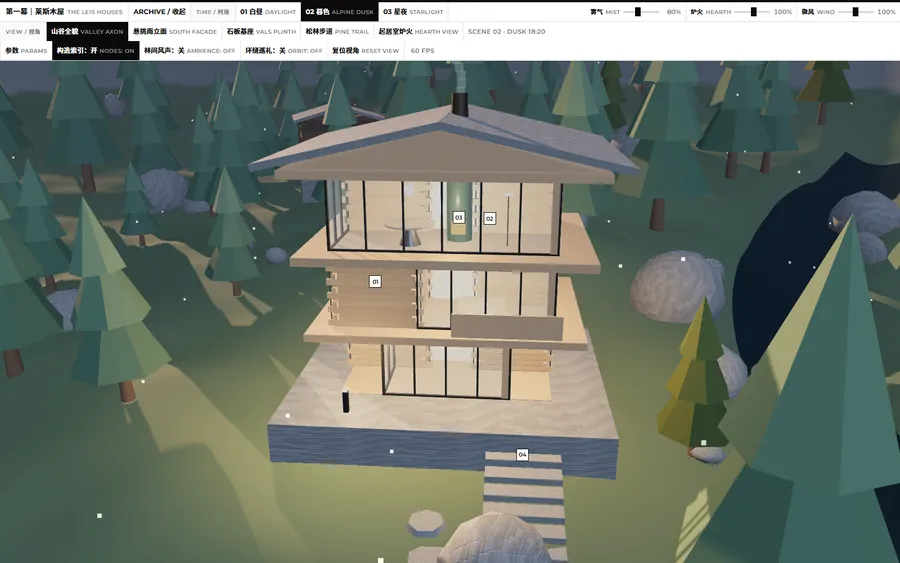

彼得·卒姆托(Peter Zumthor)在瑞士山谷里造的莱斯木屋(The Leis Houses),用当地传统的实木叠梁(Strickbau)工法把原木一层层叠起来,落在石砌基座上,屋顶压得很低 —— 建筑几乎不靠装饰,全靠木料的厚度、接缝的阴影和光线在空间里的走向说话。这一题让模型做一座可漫游的木屋:考的是构造是否照实(叠梁、石基、山墙与屋顶比例)、材质与接缝的细节,以及室内光影和漫游机位能不能传达出那种安静的空间感。下面按模型版本归档,缩略图为真实渲染效果,点击卡片查看可交互的在线页面。

Three.js 3D